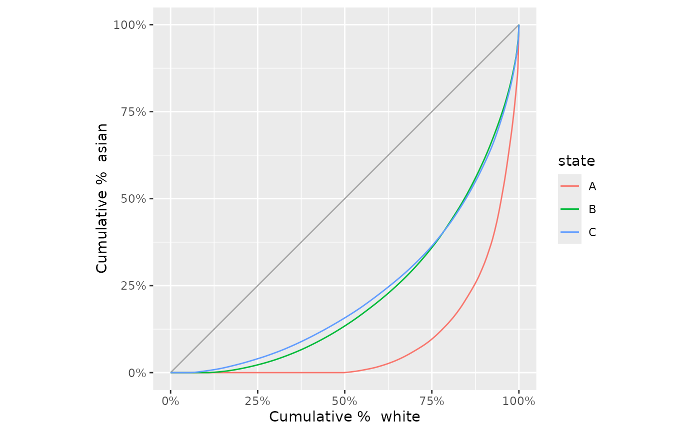
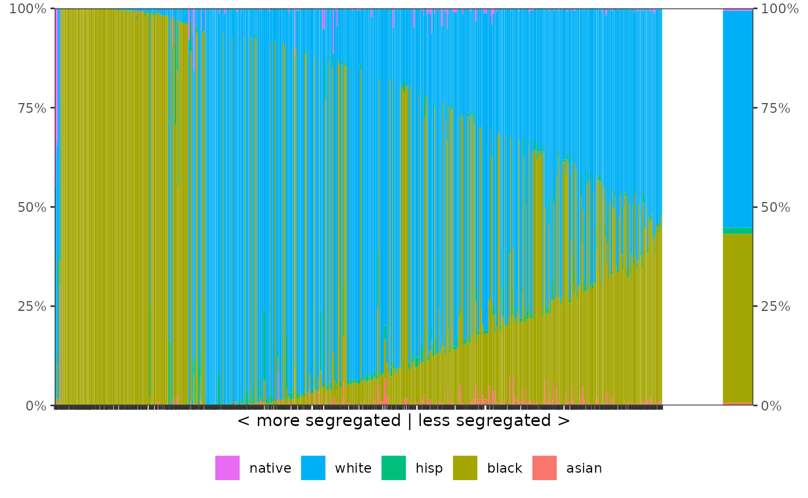
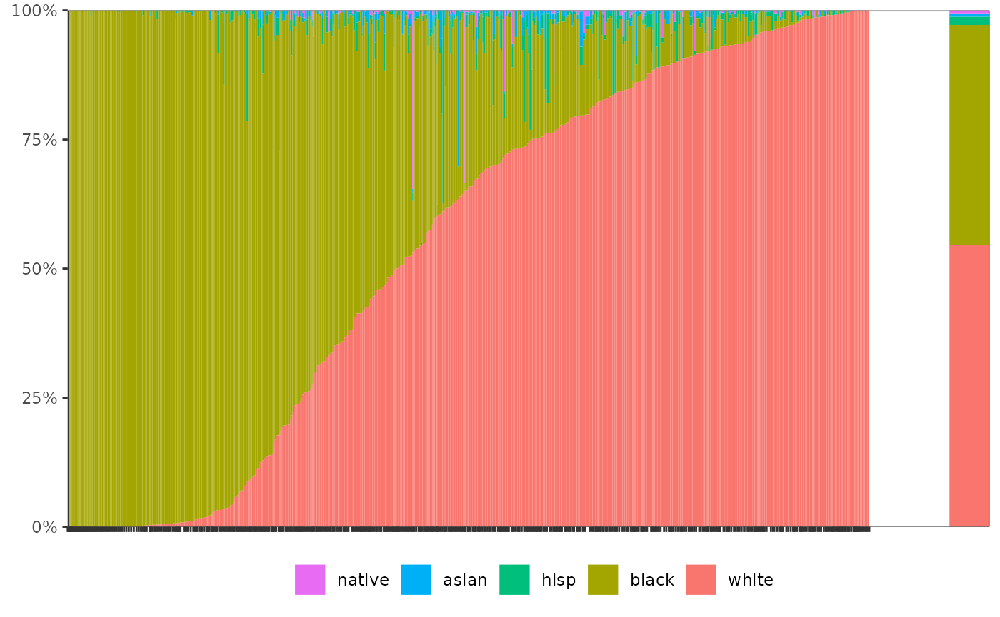
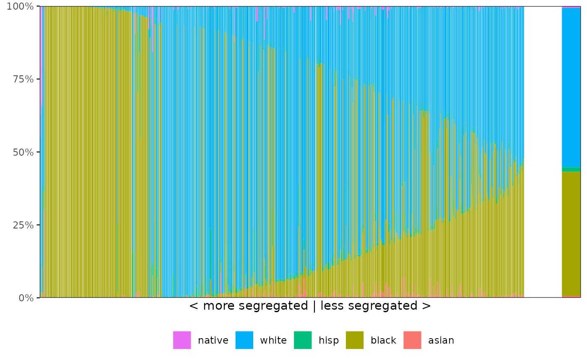
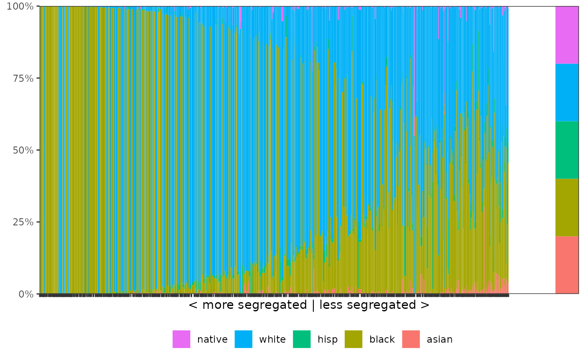
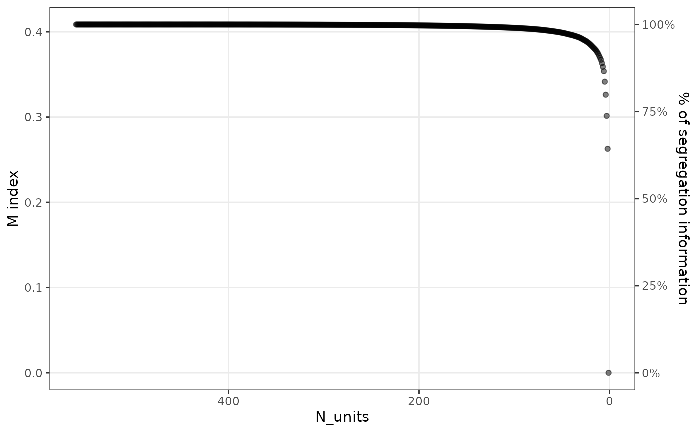
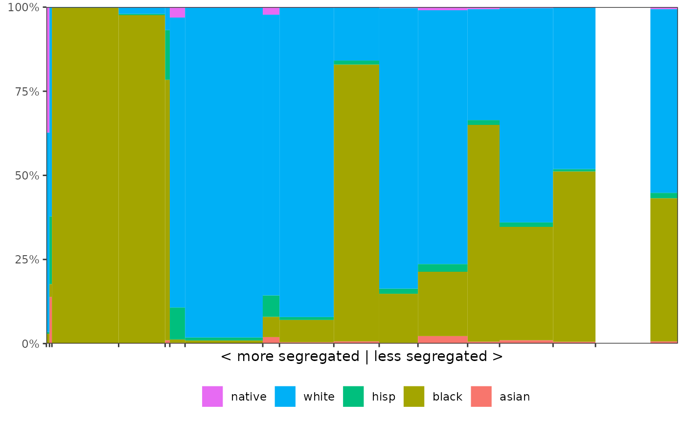

The package provides the functions segcurve() and
segplot() to visualize segregation. These functions return
simple ggplots, which can then be further styled and themed. For the
segplot() function, it is often interesting to also
compress the segregation information that is contained in large
datasets. How to do this using the functions compress() and
merge_units() is also described below, and in more detail
in this working
paper.
Segregation curve
The segregation curve was first introduced by Duncan and Duncan
(1955). The function segcurve() provides a simple way
of plotting a segregation curve:

Segplot
The function segplot() is provided to generate segplots.
Segplots are described in more detail in this working
paper. The function requires the dataset, the group, and unit
variables, and, if required, a variable that identifies the weight
(n in this case).
Other options to customize the look of the segplot are given by the
argument order. By default, the units of the segplot are
ordered by their local segregation score, but it is also possible to
order them by entropy (i.e., diversity) or by share of the majority
population. This last option can be useful for the two-group case. The
argument bar_space can be used to increase the space
between the units from the default of zero space between bars. When
plotting a subset of the dataset, the reference distribution shown on
the right of the segplot can be changed by supplying a two-column data
frame to the reference_distribution argument. One column of
this frame should contain the group identifiers, and the other should
include the reference proportion of each group. To show axis labels
either on the left side only, the right side only, or on both sides, use
the argument axis_labels.
Examples of how to use these arguments are given below:
sch <- subset(schools00, state == "A")
# basic segplot
segplot(sch, "race", "school", weight = "n", axis_labels = "both")
# order by majority group (white in this case)
segplot(sch, "race", "school", weight = "n", order = "majority")
# increase the space between bars
# (has to be very low here because there are many schools in this dataset)
segplot(sch, "race", "school", weight = "n", bar_space = 0.0005)
# change the reference distribution
# (here, we just use an equalized distribution across the five groups)
(ref <- data.frame(race = unique(schools00$race), p = rep(0.2, 5)))
#> race p
#> 1 asian 0.2
#> 2 black 0.2
#> 3 hisp 0.2
#> 4 white 0.2
#> 5 native 0.2
segplot(sch, "race", "school",
weight = "n",
reference_distribution = ref
)
Compressing segregation information
The compression algorithm requires three steps to be taken. First, it
is important to decide which units should be permitted to merge: for
residential segregation, we may only want to allow neighboring units
(such as tracts) to be mergeable. In this case, the first step consists
of compiling a data frame with exactly two columns, where each row
identifies a pair of neighboring units. In other cases, we may want to
allow all units to be mergeable, in principle. However, this can be very
time-consuming as it requires each unit to be compared to all others at
every step of the merging operation. To speed up compression, we
therefore implement an option that allows units to be merged only within
a window of “neighboring” units, where the definition of each window is
based on similarities in local segregation. Hence, for a given unit,
only n_neighbors are considered at every step, and these
neighbors are based on similarities in local segregation. Smaller
n_neighbors values will result in faster run times, but
increase the probability of non-optimal merges. The method of merging
can be specified in the compress() function by supplying
the argument neighbors.
The second step is then to run the actual compression algorithm using
compress(). For this example, we choose to compress based
on a relatively small window:
# compression based on window of 20 'neighboring' units
# in terms of local segregation (alternatively, neighbors can be a data frame)
comp <- compress(sch, "race", "school",
weight = "n", neighbors = "local", n_neighbors = 20
)After running compress()—which can take some time
depending on how many neighbors need to be considered—the output
summarizes the compression that can be achieved:
comp
#> Compression of dataset with 560 units
#> Original M: 0.4085965; Final M: 0
#> - Threshold 99%: M = 0.4045242; Units = 92
#> - Threshold 95%: M = 0.388871; Units = 22
#> - Threshold 90%: M = 0.3695035; Units = 9The results indicate that 99% of the segregation information can be
retained by only 98 units (out of 560 in the original dataset), 95% in
only 24 units, and 90% in 10 units. The percentage of information
retained on each iteration can be accessed via the data frame available
through comp$iterations. This data frame can also be used
to generate a plot that shows the relationship between the number of
merges and the loss in segregation information:
scree_plot(comp)
Another way to learn more about the compression is to visualize the information as a dendrogram:
dend <- as.dendrogram(comp)
dendextend::labels(dend) <- NULL # remove the labels
#> Warning in `labels<-.dendrogram`(`*tmp*`, value = NULL): The lengths of the new
#> labels is shorter than the number of leaves in the dendrogram - labels are
#> recycled.
#> Warning in rep(new_labels, length.out = leaves_length): 'x' is NULL so the
#> result will be NULL
plot(dend)The third step is to create a new dataset based on the desired level
of compression. This can be achieved using the function
merge_units(), and either n_units or
percent can be specified to indicate the desired level of
compression.
sch_compressed <- merge_units(comp, n_units = 15)
# or, for instance: merge_units(comp, percent = 0.80)
head(sch_compressed)
#> school race n
#> 1: M12 asian 143
#> 2: M12 black 445
#> 3: M12 hisp 472
#> 4: M12 white 6174
#> 5: M2 black 67
#> 6: M2 hisp 642The compressed dataset has the same format as the original dataset and can now be used to produce another segplot, e.g.
segplot(sch_compressed, "race", "school", weight = "n")